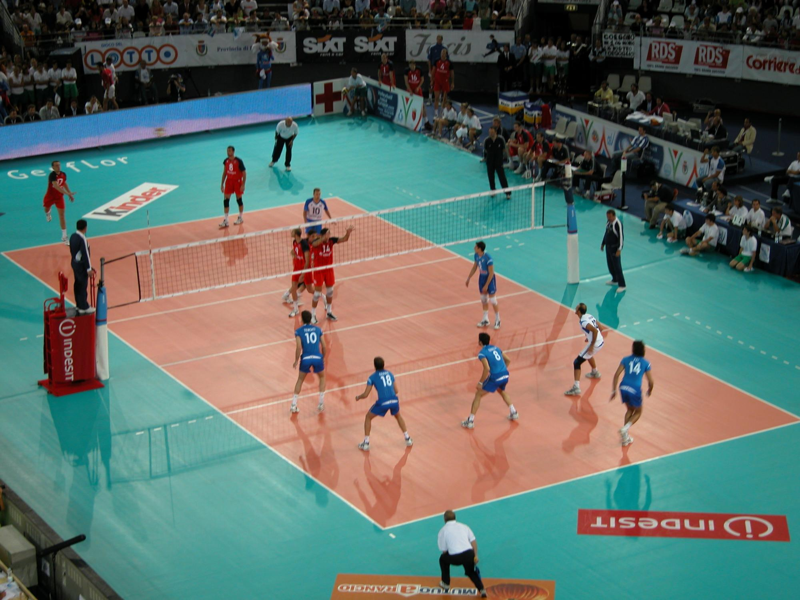

Biografia de Sebastián Álvarez Zazueta
nació el 5 de Septiembre de 2008 en Los mochis, Sinaloa. Estudió en la escuela secundaria 74 y actualmente cursa sus estudios en el Cetis68.
sus actividades de diario son:
- Futbol
- Videojuegos
- Voleibol
aqui fotos de dichas cosas
 |
 |
 |
Mis gustos:
- Mi cancion favorita es "baby please"
- Mi pelicula favorita es Avengers EndGame
- Mi cantante favorito es Iván Cornejo y nata
- Mi color favorito el negro y el rojo
mis juegos favoritos son
| Call of duty Warzone |
Fifa |
 |
|